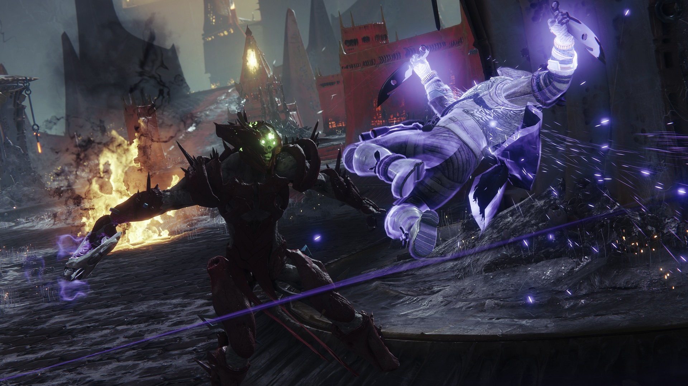
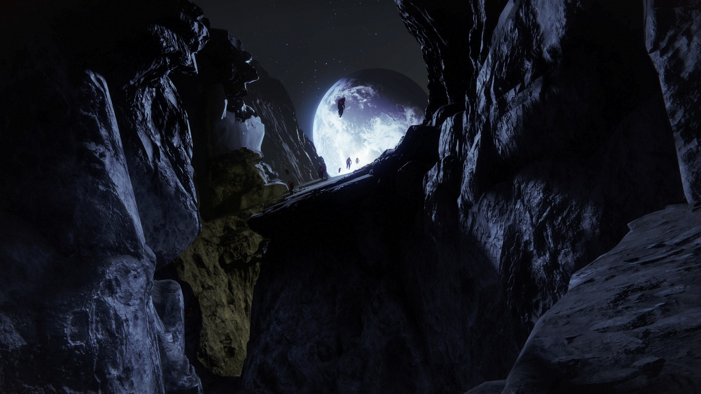
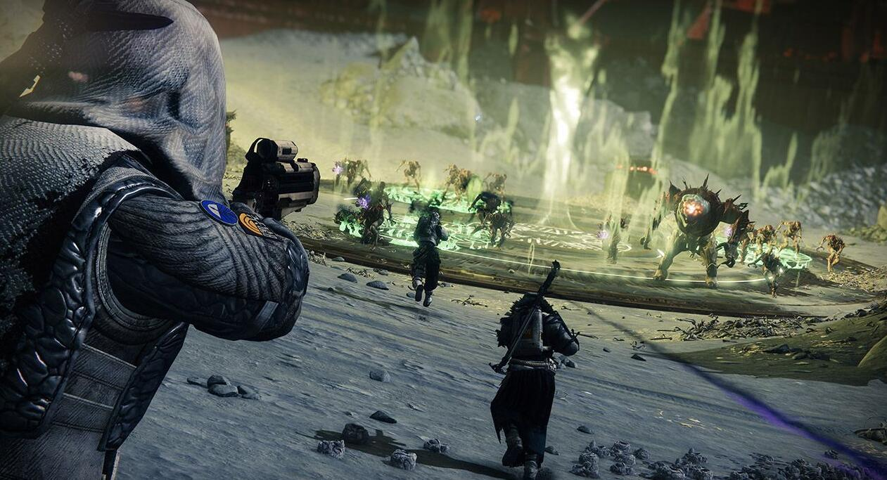
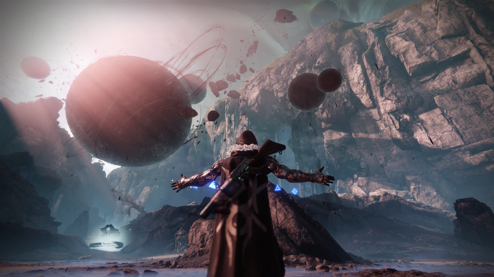

邪魔族背景
很久很久以前，远在地球诞生之前，早期虫族生存在宇宙深处一个名为起源星的气态行星上 。欧瑞克斯就诞生在起源星，那个时候他的名字还不是欧瑞克斯而是阿菈丝，意为“沉思者”，她是虫群之王奥斯尼亚姆的长女。 奥斯尼亚姆的晚年遭遇了一场政变，只有阿菈丝和她的两个妹妹幸免于难。 阴差阳错之下三姐妹在起源星的地心深处找到了黑暗之虫。 尤柏、艾尔和阿卡等虫神告诉三姐妹他们被利维坦和旅行者困在起源星数百万年，一直期望有人能够解放他们。 以力量和永生作为交换，三姐妹答应成为黑暗之虫的宿主。黑暗之虫改造了她们，并将阿菈丝改造成为男性“阿雷克”。 三兄妹返回了起源星在原始虫群中散播黑暗之虫，最终形成了今天的虫群。他们扫荡了起源星并开始向外太空扩张，在与旅行者支持的种族交战时三兄妹领悟了“刀剑奥义”， 即通过杀死敌人夺取敌人的力量。同时三兄妹也发现黑暗之虫对力量的永无止境的饥渴，如果宿主无法满足黑暗之虫需求，黑暗之虫就会反噬宿主。 于是他们踏上了永无止境的扩张之路，征服了一个又一个世界，但还是无法满足黑暗之虫的欲望。于是阿雷克杀死了自己的两个妹妹夺取了她们的力量， 又潜入了虫神所在的位面杀死了虫神阿卡得到了“夺魂”神格，并最终将自己转化成“夺魂之王”欧瑞克斯。随后他命令虫群的成员在满足自身黑暗之虫需求的前提下必须将战利品层层上缴， 依靠整个虫群的供养欧瑞克斯才能满足体内黑暗之虫的欲望。后来欧瑞克斯复活了自己的两个妹妹，并繁育了一批子女，虫群开始在整个宇宙肆虐。

邪魔族的侵略
黑暗追寻旅行者来到太阳系，邪魔族随之降临到月球，月球涌现大量的邪魔族，建立暗影要塞， 携带侵蚀月球，创造属于他们的深渊，扩展他们的屠戮，喂养他们身体里的虫子，在月球，到处是光能被掠夺的守护者，到处是备受折磨的灵魂，到处是渗人的惨叫和呼救 ，他们永远是你的梦魇，人类守护者与邪魔族之间的漫长的战争开始了

邪魔族无时不刻地在进行献祭仪式，源源不断的邪魔族不断被带到月球， 他们正在规划者巨大的阴谋，暗影还在蔓延，守护者，阻止他们就是你的任务，让他们见证你的光能

夺魂王杀死了虫神，统治了整个邪魔族，成为夺魂王之后， 掌控了大量的暗影之力，至高无上的暗影力量能够将所有道路上的阻碍着全部转换成自己的傀儡军队，夺魂王已经开始大肆侵略，夺取大量的敌人，扩张了自己的军队， 傀儡军团在太阳系大肆出现，夺魂王的暗影力量开始肆虐，神秘的傀儡军团早就成为了守护者的巨大挑战
